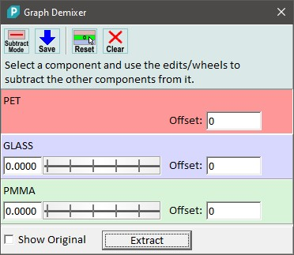

|
描述
图谱解混器对话框允许将几个单光谱相互减去，以便从混合光谱中创建纯组分光谱（通常您会有混合的平均光谱）。
输入与结果
输入：
<n> 个单光谱数据对象（至少 2 个）
结果：
<n> 个单光谱（已解混）
用户界面

减法模式（工具按钮）
如果勾选，可以通过更改权重因子从所有其他组分中减去选定组分。如果未勾选，将通过使用权重因子减去其他组分来更改选定组分。
保存（工具按钮）
保存当前解混以便从其他光谱中减去解混光谱。
重置（工具按钮）
重置当前选定组分的解混（将所有权重因子设为零）。这不会重置已保存的解混。
清除（工具按钮）
重置所有解混。
显示原始
如果勾选，预览图谱查看器窗口将显示原始（放置的）图谱对象。
提取：
提取解混后的光谱。
预览窗口
预览图谱窗口显示当前的混合图谱。缩放基线可以更容易地找到好的权重因子。